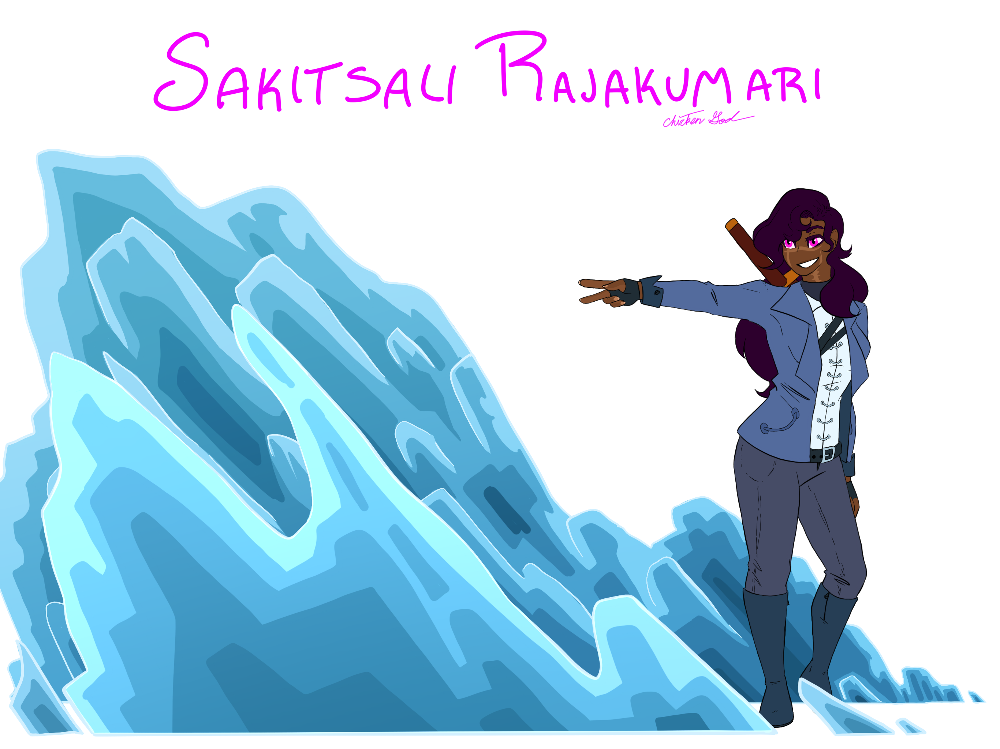

About Me
My name is Ramola. I have what I like to call the 'unholy trinity' which consists of PTSD, anxiety, and depression. I love to draw, paint, sculpt, weld, carve, color, animate, write, etc. I am a very artistic person!
I adore animals, my favorite animals are cats! I have two cats at home, one has chosen me as his person, the other is so ditzy she probably thinks she's human too.

I also have D.I.D., formerly known as Multiple Personality Disorder! People with D.I.D., from my understanding, are called Systems, as there are multiple people in one body. People who are not Systems (have on person in one body) are called Singlets. The different personalities inside one body are called alters. I only have nine alters, and was diagnosed very recently! Come and meet the gang:
The Alters
Sakitsali
Hello!! To sort of help out with everything each of the alters will be introducing themselves and their roles in the System! My name is Sakitsali Rajakumari, but you can call me Soso. I generally 'front' (control the body) when we are in a high energy situation or we need too take charge of something. I originally stemmed from my hosts imagination, I was the first alter and eventually split into two (my other part being Song). I have my own backstory and lore and everything, including powers and friends that are purely fictional and not part of the System! I am very chatty and pretty much always willing to help out a friend in need.
Leo
Hello, my name is Leo Stern, I am Soso's biological brother. I know we don't look alike at all but we're technically not even human, these are just our human forms with representations of some of our powers around us. Soso's is ice while mine is both shadow and spirit summoning. I think I 'woke up' in the headspace during Sophomore year of highschool. I stutter a lot, I'm shy, I don't really have anything I'm good at other than baking and singing. I really only front when we need to be... soft? It's easiest for us to handle things when I front when the body is sick or hurt or scared. I really come out when we just need a hug. I... really need a hug...

Gijs
Greetings. I am Gijs. I appeared in the headspace during our seventh year of middle school. My role in the system is 'Gatekeeper'. The role is self explanatory. I keep a documentation of anything and everything going on. I am logical, I am true to myself. I front during tests and times of focus. I find it easiest to front when I am doing calculations and puzzles with a clear outcome. You can find me fronting during classes where notes are essential, and focus is required. Other than that I do not come forward.

Fogi
Hello! My name is Fogi, short for Forgivness. My twin sister and I 'woke up' in seventh grade of middle school. We were struggling a lot with the concept of forgivness and what to forgive and when and even if we have to forgive. I may embody the body's forgivness, but I do not think it is something that is required to have before moving on. You can still be angry, still be upset, still not forgive the person asking for it and you can still move on. Do not ever feel like you must forgive the person who hurt you in order to grow as a person yourself. If you do not want to give them forgivness then you do not have to.

Remus
My name is Remus. My twin sister is Fogi. I am Revenge. It may not take a lot to make everyone angry enough for it to show, but it's real easy to piss me off soo watch your fucking mouth. I ain't afraid to beat your ass if I need to so shut the fuck up, sit the fuck down, and go fuck yourself.
-Fogi would like to ask the reader to understand that Remus is simply like that, and this was her actually being quite cordial since she knows this is for a class and it is important to the rest of us. Thank you for your time!

Thunder
Thunder, here! I pretty much encapsulate the host's imagination side of things. I usually put a cap on stuff if it's getting to graphic or if we really need to focus no something else. I manage the issues we have in our real lives and am able to sort of... squish it into a story that we can work through in our head. Because of the nature of my role I pretty much never front, but I'm always there lurking! I also speak for the non-verbal of our System which really only consists of one alter. I used to be non-verbal as well but then our imagination grew a little too strong and I had a sort of growth spurt, so now I can talk for the both of us!

Hunter
Thunder here! Hunter and I used to be the same alter but we split during seventh grade. Now Hunter is mainly in charge of the base instincts of the body. Any trauma responses, reactions and instincts can be credited to her! Hunter's main job is to protect the body but because that's a little difficult to do when all you can say are trills and growls, she tends to stay in the headspace protecting Core. The only time Hunter fronts is during extreme bouts of fear and/or anger. If the body starts growling and is unable to process words (a panic attack oor flashback), that's Hunter attempting to control the body and keep it safe while the rest of us try to get our shit back together.
She says hi by the way!

Echo
Hello from the depths of our mind! Collectively we're called plenty of names. 'Ramola' is the one our blood family gave us but not one we really feel like we fit with. Names from 'Chicken' to 'Granola' and 'Sunfish' are all names we respond to well but don't really resonate with. When we find our collective name I think it'll be great, but also it's fine if we never find a name we're all happy with. Heck, I know for a fact that Hunter's name is going to change because she's outgrown it (I'm so proud of her! She's come a long way! Names are very important to us, but so is instincts. It is only when we find a name that clicks that we will claim it as our own.
Oops! I rambled a bit; my name is Echo, I am the core of our mind and body. I am the spirit, the soul, the child, whatever you want to call me. Only two people in our entire life have seen me front. Those two people have known us for at least five years before seeing me. I'm very fragile, most of the alters splitting off from me in the first place, so my stability is often a main concern for everyone. It's one of the main reasons why I rarely front, and when I do it is for very brief periods of time. You will never see me directly, only ever hear of me working behind the scenes. I am the power source, the heart of the mind and the soul of the body. I am the true and first essence of who the host used to be before we split.
I am the original.

Stonesong
My turn, my turn!! What's up everyone, my name is Stonesong! Song for short, I am a siamese cat with magenta eyes. Surprise, surprise! I am the main front! We're a small System and because of our upbringing and the fact that we are a System can never under any circumstances be revealed to our blood family members, I am the main front! I front almost all the time and while Soso likes to help out I am generally behind the wheel 24/7! It's definetly weird, being a cat and being the main front for a human body but we make it work! Sometimes I go non-verbal but people have generally beem accomodating when it comes to that! I can't purr cause human but I do purr no the inside! Same with the ears and tail, they're always moving how you'd expect but they're not visible cause, again, human.
I end up accidentally reverting into cat instincts a lot of the time. If it's warm out I sleep, if I'm comfy I sleep, I hate getting wet unless it's in the rain, I love watching things move, I meow, I purr, I make weird noises, I'm a little clumsy, I love raw fish, and have no idea what I'm doing half the time! I like routine and helping people out, and if I can I bring back gifts and stuff that remindss me of the people I love! The probalem is I sort of bring back what I think will make them happy which is the quivalent oof a cat bringing home a leaf because it wasn't to bring you gifts. Sweet, but ultimetly useless in the end.
Oh well! No one's told me to stop yet, so I'll keep doing it until I'm told otherwise! I'm Song, I'm a cat, and I am almost always the one you talk to when you talk to the body. Nice to meet you!

Lab List
- Lab 1: You Will Find Nothing Here
- Lab 2: My First HTML
- Lab 3: File Structure and Transfer
- Lab 4: Pseudocoding
- Lab 5: Data Type and Variables
- Lab 6: Arrays and Objects
- Lab 7: Functions
- Lab 8: Anon Functions and Callbacks
- Lab 9: JavaScript for the Web
- Lab 10: JavaScript Events and Forms
- Lab 11: Libraries & jQuery
- Lab 12: Conditionals
- Lab 13: Loops
- Lab 14:
- Lab 15: AJAX
- Lab 16: JSON and APIs
- Lab 17: